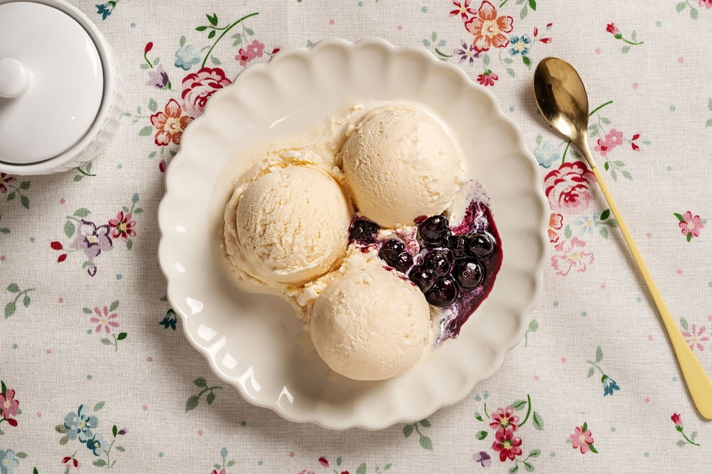
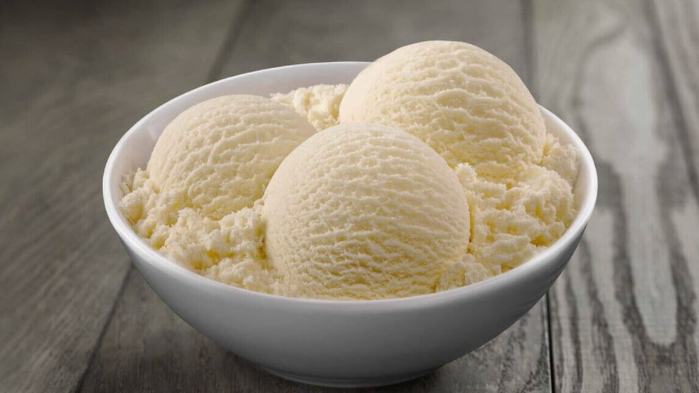

Gelat de Vainilla

Anar als ingredients |
Anar als passos
Ingredients

- 500ml de nata líquida
- 250ml de llet
- 150g de sucre
- 2 cullerades d'extracte de vainilla
Passos a seguir

- Barreja la nata, la llet, el sucre i l'extracte de vainilla.
- Posa la barreja en una geladora.
- Congela fins a obtenir la consistència desitjada.